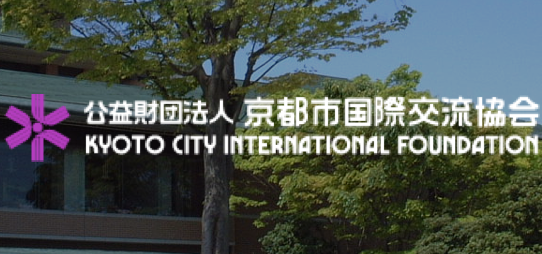
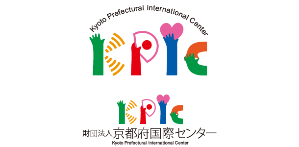

Learning centers & Other facilities

Volunteer's Room Japanese Class
Japanese language classes are held for foreigners living in the Kyoto area.kokoka, Kyoto City International Foundation has been providing "Volunteer's Room Japanese Class", covering the expenses for the costs of operating it including copies of materials for learners and maintenance of the volunteer room.
You can learn more about Volunteer's Room Japanese Class click on here KCIF
Easy Japanese
This is a Japanese language class to help those whose native tongue is not Japanese become comfortable with life in Kyoto sooner.Depending on the level of students, there are 2 types of classes, “Easy Japanese I (Yasashii Nihongo I)” and “Easy Japanese Ⅱ (Yasashii Nihongo Ⅱ)”.
You can learn more about Easy Japanese click on here KCIF

Japanese Classes for Foreign Residents by Kyoto Prefectural International Center
Targeted individuals and their Japanese language level,- Beginners, Those who learn Japanese for the first time - those who can read hiragana and katakana
- International residents who live or work or study in Kyoto Prefecture
- Mid/long-term residents
- In principle, 18 years or older
You can learn more about Japanese Classes for Foreign Residents by Kyoto Prefectural International Center click on here KPIC
Japanese lessons taught by volunteers - Kyoto International Cultural Association (KICA)
Provided Japanese language courses as follows:- Easy Japanese click here to learn more Easy Japanese
- Japanese lessons by voluntary tutors click here to learn more voluntary tutors